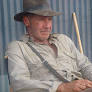

-

sylvester-stallone-Rambo
Sylvester Gardenzio Stallone es un actor y cineasta estadounidense. Es reconocido mundialmente como uno de los principales actores del cine de acción de Hollywood.
-

indiana-jones
Henry Walton Jones, Jr., más conocido como Indiana Jones, es un arqueólogo y aventurero, protagonista de la franquicia del mismo nombre producida por Steven Spielberg y George Lucas..
-
El guason
Joker —a veces traducido como Guasón o Como es un personaje creado por Bill Finger, Bob Kane y Jerry Robinson, e introducido en el primer ejemplar del comic book Batman, en abril de 1940, publicado por DC Comics..